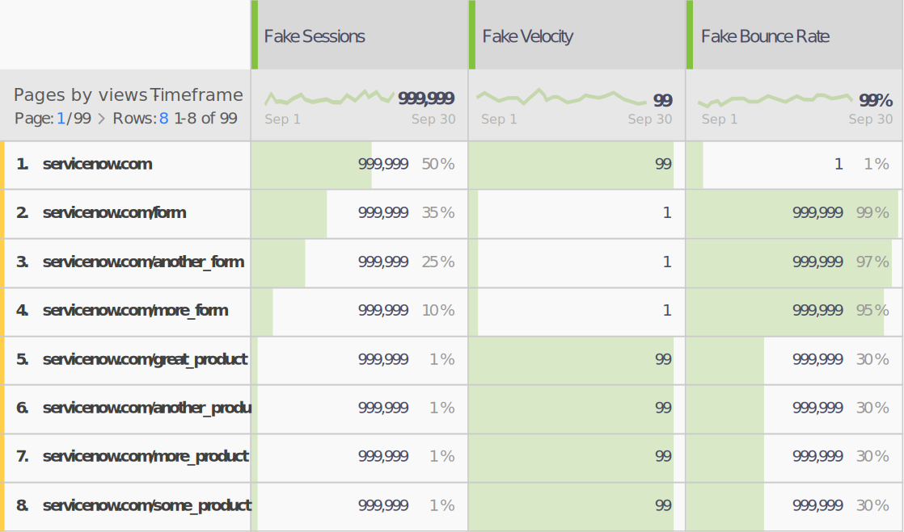
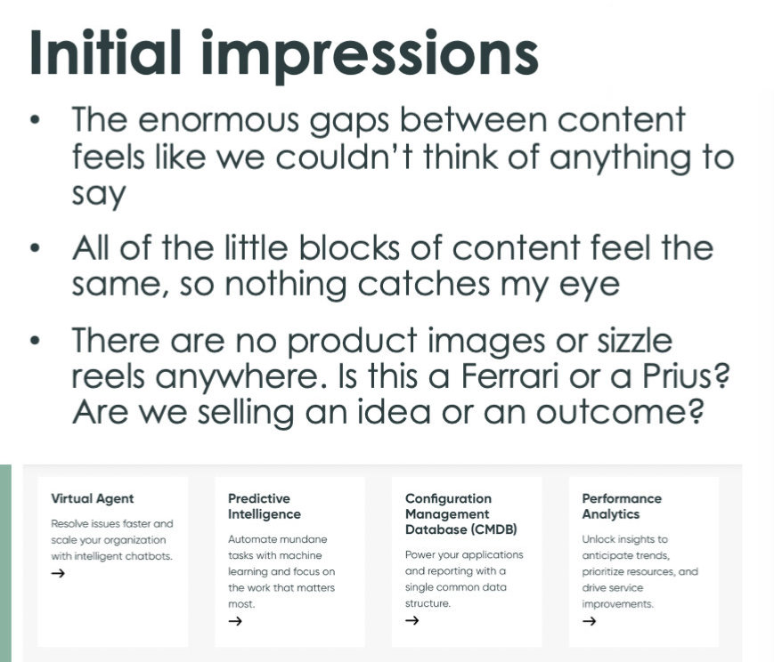
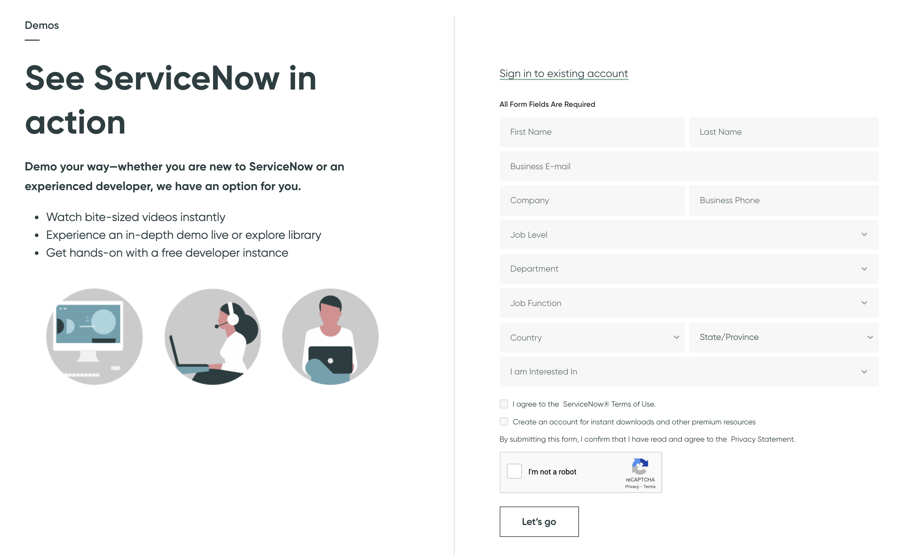
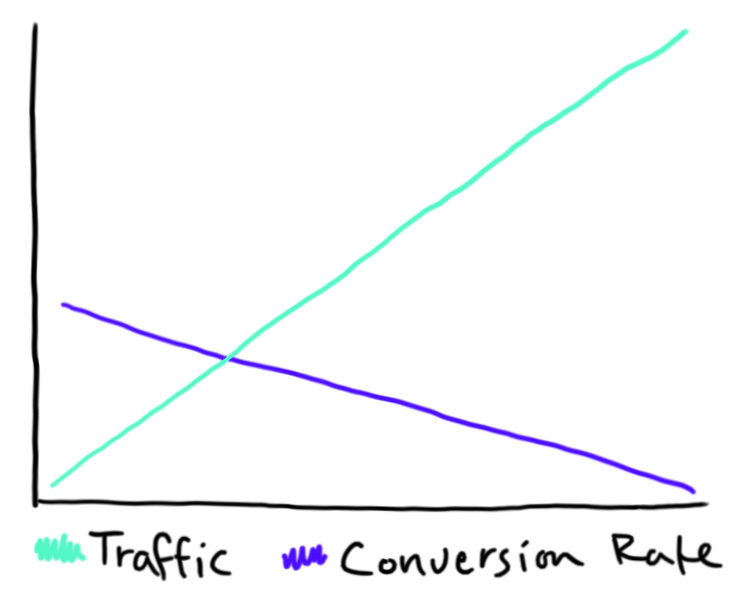
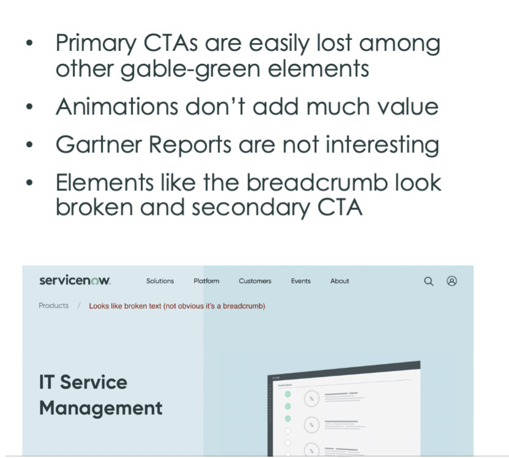
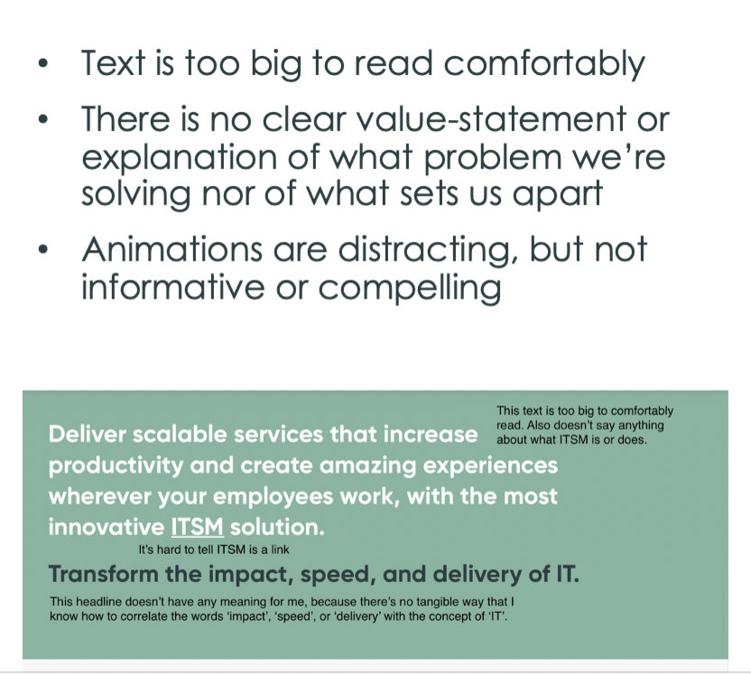
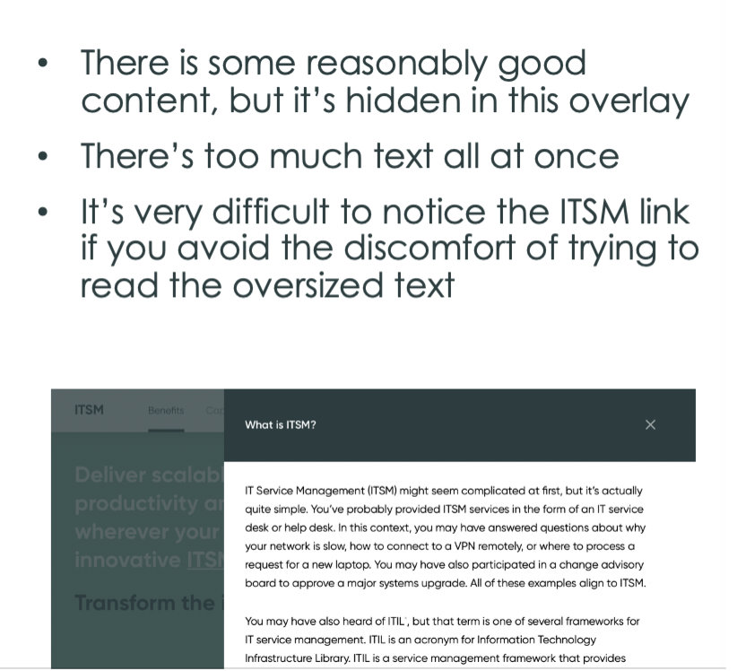
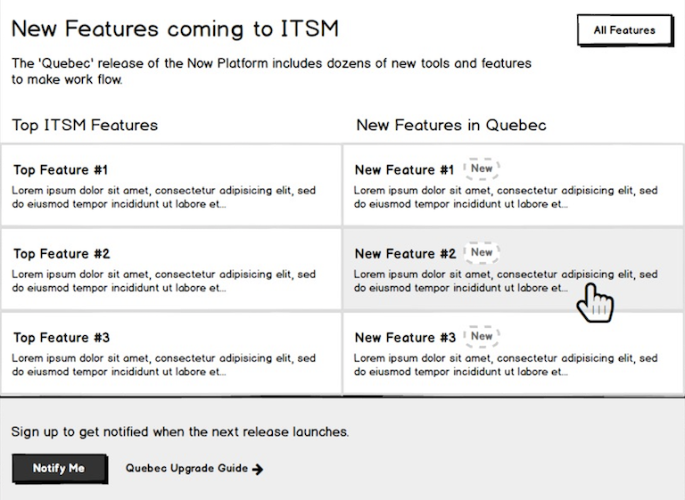
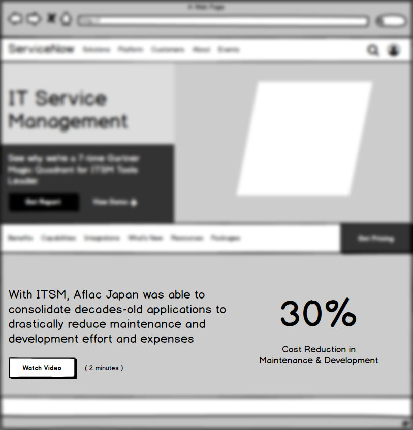

By conducting impactful UX-research and bringing data and analytics into the spotlight, I've helped ServiceNow rethink the web-acquisition and lead-generation approach for the entire world.
My awareness of the problems grew from my own experiences visiting the website before I was even hired, and it's taken nearly two full years of advocating and "connecting the dots" to bring the Web Optimization program to life.
As a leader on the newly-formed Web Optimization team, I bring a holistic approach to our sales pipeline. Under my leadership, we're spending more time courting visitors who are ServiceNow-curious and converting them into high-quality, motivated leads.
Disclaimer: The purpose of this article is to showcase the process and rationale I employed to drive a data-driven approach for ServiceNow.
As this work deals extensively with confidential information including marketing strategy, site traffic, conversion rates, bounce rates, marketing spend, and other data, ALL FIGURES AND METRICS ARE FABRICATED in order to protect ServiceNow's business.
Background
In the months before I joined ServiceNow, I frequently visited their website to try to learn more about the products. Surely if I was going to help market them, I'd need to know what it was I was selling.
The trouble was, no matter how many times I visited, I couldn't wrap my head around the value proposition. Sometimes I'd see a link that seemed promising -- like "demo" or "learn more" (🤦♂️ Not exactly swinging for the fences here) -- but every time it just dumped me on a ridiculously long form. "No way!" 🙅♂️
As a visitor or prospective-customer, this is a problem; the website asks for a lot from visitors without giving anything in return.
While UX has "delivered results" to the extent that we can see engagement metrics changing over time, scrutinizing the analyses and metrics provided as "evidence of success" led me to wonder if we were really accomplishing what we set out to.
Discovery
Click any image to zoom
(click to expand) collapse
Through a series of interviews and usability tests I collected consistent evidence of participants feeling upset and even outraged when they were unexpectedly confronted with a form.
Like many other companies in the Enterprise space, we've embraced a strategy of "funnel traffic to forms as quickly as possible" under the misguided notion that a flat "8%" (Reminder: this is a made-up number) of traffic converted.

Reviewing our analytics data, I can see how our strategy has backfired and instead deprives our visitors of the opportunity to "get sold on ServiceNow" before they hit what essentially amounts to a pay-wall.
Given the apparent "bottleneck" of the bounce-rate on forms, it's easy to understand why my colleagues focus their efforts on reducing friction there. The problem I uncovered through my research, however, is that by the time a user gets to a form page, they're already too upset for us to convince them of anything.
Research
(click to expand) collapse
As part of a site-assessment I conducted in tandem with a fresh round of user-interviews, I was able to document a number of pain-points for visitors to the site. In general, my hypothesis is that visitors are not filling the forms because we haven't convinced them that there's enough value on the other side to be worth the effort.
In my previous research, participants also expressed a fear that some high-pressure salesperson was going to call and harass them or that they'd be stuck on an email-marketing list if they filled out the form.
For now, we can't change or shorten the form without causing a significant disruption to the sales pipeline, but we can still test my hypotheses (and potentially improve our conversion rates on forms) are with the content pages.
Based on my user-interviews, data-analysis, and research, I came up with...
19
Pain Points
52
Test Ideas
and we're going to test them all (or at least as many as make sense as our strategy evolves)
Planning

The Optimization Team's first priorities is to explore whether visitors understand what ServiceNow does on a basic level. In the future we plan to address less-immediate issues like our anemic return-visitor traffic (which may have something to do with our lack of personalization or targeted content).
In our Qualtrics surveys, most respondents communicate that they weren't able to complete their tasks on the site, with most of the tasks having to do with information-gathering or product-discovery.
To begin determining how users understand our products (and what content interests them) we're creating a simple component to showcase top features in a clear and concise way. The test hypothesis expects that visitors who are interested in the plain English will spend more time engaging with the test content. We also project that subsequent form-conversions will increase as a result of the visitors having a better understanding of our value proposition.
If the test is successful, we can expand the test to any product page with relatively low effort thanks to the simple design and the fact that most of the content already exists in the developer and upgrade documentation.
What's Next

Our first rounds of tests are being scoped and finalized right now. As we wait for results from these tests, additional tests will be coordinated to verify other pain-points.
The Optimization group's goal is to achieve "80% confidence" in our results so that we can create guidelines with the parameters we've identified, while still leaving room for our partner-teams to make final adjustments and perform iterative testing.
After we establish a clear sequence of tests and outcomes for a pain-point, our group will share our findings with the broader organization during regularly-scheduled Product Review meetings.
Finally, as we maximize our outcomes, we'll work with other departments across the company to start baking our learnings into the global corporate marketing strategy.
Convince the organization that these issues matter enough to prioritize and address immediately
Identify strategic pages and content-sections to test my hypothesis
Create testing ideas, hypotheses, and conceptual-designs
Execute and scale controlled tests
Compile results and share design-guidelines
Evolve the program
It's been a thrilling journey so far, and I can't wait to find out if my hypotheses are right or if there are still more mysteries to unravel.